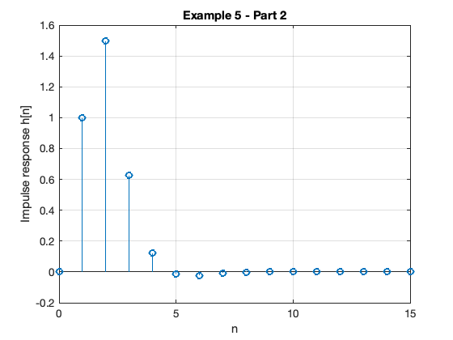

clear all
cd matlab
pwd
format compact
ans =
'/Users/eechris/dev/eg-247-textbook/content/dt_systems/4/matlab'
Models of Discrete-Time Systems
Scope and Background Reading
This we will explore digital systems and learn more about the z-transfer function model.
The material in this presentation and notes is based on Chapter 9 (Starting at Section 9.7) of Steven T. Karris, Signals and Systems: with Matlab Computation and Simulink Modelling, 5th Edition. from the Required Reading List. I have skipped the section on digital state-space models.
Agenda
-
Discrete Time Systems
-
Transfer Functions in the Z-Domain
-
Modelling digital systems in Matlab/Simulink
-
Continuous System Equivalents
-
Example: Digital Butterworth Filter
Discrete Time Systems
In the lecture that introduced the z-transform we talked about the representation of a discrete-time (DT) system by the model shown below:

In this session, we want to explore the contents of the central block.
DT System as a Sequence Processor
-
As noted in the previous slide, the discrete time system (DTS) `takes as an input the sequence $x_d[n]$1 which in a physical signal would be obtained by sampling the continuous time signal $x(t)$ using an analogue to digital converter (ADC).
-
It produces another sequence $y_d[n]$ by processing the input sequence in some way.
-
The output sequence is converted into an analogue signal $y(t)$ by a digital to analogue converter (DAC).

What is the nature of the DTS?
-
The discrete time system (DTS) is a block that converts a sequence $x_d[n]$ into another sequence $y_d[n]$
-
The transformation will be a difference equation $h[n]$
-
By analogy with CT systems, $h[n]$ is the impulse response of the DTS, and $y[n]$ can be obtained by convolving $h[n]$ with $x_d[n]$ so:
- Taking the z-transform of $h[n]$ we get $H(z)$, and from the transform properties, convolution of the signal $x_d[n]$ by system $h[n]$ will be multiplication of the z-transforms:
- So, what does $h[n]$ and therefore $H(z)$ look like?
Transfer Functions in the Z-Domain
Let us assume that the sequence transformation is a difference equation of the form2:
Take Z-Transform of both sides
From the z-transform properties
so….
Gather terms
from which …
Define transfer function
We define the discrete time transfer function $H(z) := Y(z)/U(z)$ so…
… or more conventionally3:
DT impulse response
The discrete-time impulse reponse $h[n]$ is the response of the DT system to the input $x[n] = \delta[n]$
Last week we showed that was defined by the transform pair
so
Example 5
Karris Example 9.10:
The difference equation describing the input-output relationship of a DT system with zero initial conditions, is:
Compute:
- The transfer function $H(z)$
- The DT impulse response $h[n]$
- The response $y[n]$ when the input $x[n]$ is the DT unit step $u_0[n]$
5.1. The transfer function
5.2. The DT impulse response
Start with:
Matlab Solution
See dtm_ex1_2.mlx. (Also available as dtm_ex1_2.m.)
The difference equation describing the input-output relationship of the DT system with zero initial conditions, is:
Transfer function
Numerator $z + 1$
Nz = [0 1 1];
Denominator $z^2 - 0.5 z + 0.125$
Dz = [1 -0.5 0.125];
Poles and residues
[r,p,k] = residue(Nz,Dz)
r =
0.5000 - 2.5000i
0.5000 + 2.5000i
p =
0.2500 + 0.2500i
0.2500 - 0.2500i
k =
[]
Impulse Response
Hz = tf(Nz,Dz,1)
hn = impulse(Hz, 15);
Hz =
z + 1
-------------------
z^2 - 0.5 z + 0.125
Sample time: 1 seconds
Discrete-time transfer function.
Plot the response
stem([0:15], hn)
grid
title('Example 5 - Part 2')
xlabel('n')
ylabel('Impulse response h[n]')

Response as stepwise continuous y(t)
impulse(Hz,15)
grid
title('Example 5 - Part 2 - As Analogue Signal')
xlabel('nTs [s]')
ylabel('Impulse response h(t)')

5.3. The DT step response
Solved by inverse Z-transform.
Matlab Solution
See dtm_ex1_3.mlx. (Also available as dtm_ex1_3.m.)
open dtm_ex1_3
Results

Modelling DT systems in Matlab and Simulink
Matlab
Code extracted from dtm_ex1_3.m:
Ts = 1;
z = tf('z', Ts)
z =
z
Sample time: 1 seconds
Discrete-time transfer function.
Hz = (z^2 + z)/(z^2 - 0.5 * z + 0.125)
Hz =
z^2 + z
-------------------
z^2 - 0.5 z + 0.125
Sample time: 1 seconds
Discrete-time transfer function.
step(Hz)
grid
title('Example 1 - Part 3 - As Analogue Signal')
xlabel('nTs [s]')
ylabel('Step response y(t)')
axis([0,15,0,3.5])

Simulink Model
See dtm.slx:

dtm
Results

Converting Continuous Time Systems to Discrete Time Systems
- In analogue electronics, to implement a filter we would need to resort to op-amp circuits with resistors, capacitors and inductors acting as energy dissipation, storage and release devices.
- In modern digital electronics, it is often more convenient to take the original transfer function $H(s)$ and produce an equivalent $H(z)$.
- We can then determine a difference equation that will respresent $h[n]$ and implement this as computer algorithm.
- Simple storage of past values in memory becomes the repository of past state rather than the integrators and derivative circuits that are needed in the analogue world.
- To achieve this, all we need is to be able to do is to sample and process the signals quickly enough to avoid violating Nyquist-Shannon’s sampling theorem.
Continuous System Equivalents
- There is no digital system that uniquely represents a continuous system
- This is because as we are sampling, we only have knowledge of signals being processed at the sampling instants, and need to reconstruct the inter-sample behaviour.
- In practice, only a small number of transformations are used.
- The derivation of these is beyond the scope of this module, but we’ll mention the ones that Matlab provides in a function called
c2d
Matlab c2d function
Let’s see what the help function says:
help c2d
C2D Converts continuous-time dynamic system to discrete time.
SYSD = C2D(SYSC,TS,METHOD) computes a discrete-time model SYSD with
sample time TS that approximates the continuous-time model SYSC.
The string METHOD selects the discretization method among the following:
'zoh' Zero-order hold on the inputs
'foh' Linear interpolation of inputs
'impulse' Impulse-invariant discretization
'tustin' Bilinear (Tustin) approximation.
'matched' Matched pole-zero method (for SISO systems only).
'least-squares' Least-squares minimization of the error between
frequency responses of the continuous and discrete
systems (for SISO systems only).
The default is 'zoh' when METHOD is omitted. The sample time TS should
be specified in the time units of SYSC (see "TimeUnit" property).
C2D(SYSC,TS,OPTIONS) gives access to additional discretization options.
Use C2DOPTIONS to create and configure the option set OPTIONS. For
example, you can specify a prewarping frequency for the Tustin method by:
opt = c2dOptions('Method','tustin','PrewarpFrequency',.5);
sysd = c2d(sysc,.1,opt);
For state-space models,
[SYSD,G] = C2D(SYSC,Ts,METHOD)
also returns the matrix G mapping the states xc(t) of SYSC to the states
xd[k] of SYSD:
xd[k] = G * [xc(k*Ts) ; u[k]]
Given an initial condition x0 for SYSC and an initial input value u0=u(0),
the equivalent initial condition for SYSD is (assuming u(t)=0 for t<0):
xd[0] = G * [x0;u0] .
See also C2DOPTIONS, D2C, D2D, DYNAMICSYSTEM.
Reference page in Doc Center
doc c2d
Other functions named c2d
DynamicSystem/c2d ltipack.tfdata/c2d
doc c2d
Example 6
- Design a 2nd-order butterworth low-pass anti-aliasing filter with transfer function $H(s)$ for use in sampling music.
- The cut-off frequency $\omega_c = 20$ kHz and the filter should have an attenuation of at least $-80$ dB in the stop band.
- Choose a suitable sampling frequency for the audio signal and give the transfer function $H(z)$ and an algorithm to implement $h[n]$
Solution
See digit_butter.m.
First determine the cut-off frequency $\omega_c$
wc = 2*pi*20e3
wc =
1.2566e+05
From the lecture on filters, we know the 2nd-order butterworth filter has transfer function:
Substituting for $\omega_c = 125.6637\times 10^3 $ this is …?
Hs = tf(wc^2,[1 wc*sqrt(2), wc^2])
Hs =
1.579e10
---------------------------
s^2 + 1.777e05 s + 1.579e10
Continuous-time transfer function.
Bode plot
Matlab:
bode(Hs,{1e4,1e8})
grid

Sampling Frequency
| From the bode diagram, the frequency at which $ | H(j\omega) | $ is $-80$ dB is approx $12.6\times 10^6$ rad/s. |
To avoid aliasing, we should choose a sampling frequency twice this = ?
$\omega_s = 2\times 12.6\times 10^6$ rad/s.
ws = 2* 12.6e6
ws =
25200000
So
$\omega_s = 25.2\times 10^6$ rad/s.
Sampling frequency ($f_s$) in Hz = ?
fs = ws/(2*pi)
fs =
4.0107e+06
Sampling time $T_s = ?$
$T_s = 1/fs\;\mathrm{s}$
Ts = 1/fs
Ts =
2.4933e-07
Digital Butterworth
zero-order-hold equivalent
Hz = c2d(Hs, Ts)
Hz =
0.0004836 z + 0.0004765
-----------------------
z^2 - 1.956 z + 0.9567
Sample time: 2.4933e-07 seconds
Discrete-time transfer function.
Step response
step(Hz)

Algorithm
From previous result:
Dividing top and bottom by $z^2$ …
expanding out …
Inverse z-transform gives …
in algorithmic form (compute $y[n]$ from past values of $u$ and $y$) …
Convert to code
To implement:
/* Initialize */
Ts = 2.4933e-07; /* more probably some fraction of clock speed */
ynm1 = 0; ynm2 = 0; unm1 = 0; unm2 = 0;
while (true) {
un = read_adc;
yn = 1.956*ynm1 - 0.9567*ynm2 + 486.6e-6*unm1 + 476.5e-6*unm2;
write_dac(yn);
/* store past values */
ynm2 = ynm1; ynm1 = yn;
unm2 = unm1; unm1 = un;
wait(Ts);
}
Comments
PC soundcards can sample audio at 44.1 kHz so this implies that the anti-aliasing filter is much sharper than this one as $f_s/2 = 22.05$ kHz.
You might wish to find out what order butterworth filter would be needed to have $f_c = 20$ kHz and $f_{\mathrm{stop}}$ of 22.05 kHz.
Summary
- Discrete Time Systems
- Transfer Functions in the Z-Domain
- Modelling digital systems in Matlab/Simulink
- Continuous System Equivalents
- Example: Digital Butterworth Filter
Solutions to Example 5
Solution to 5.1.
The transfer function is
Solution to 5.2.
The DT impulse response:
Solution to 5.3.
Step response: